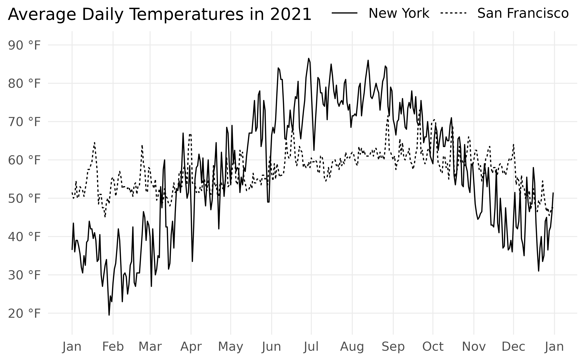
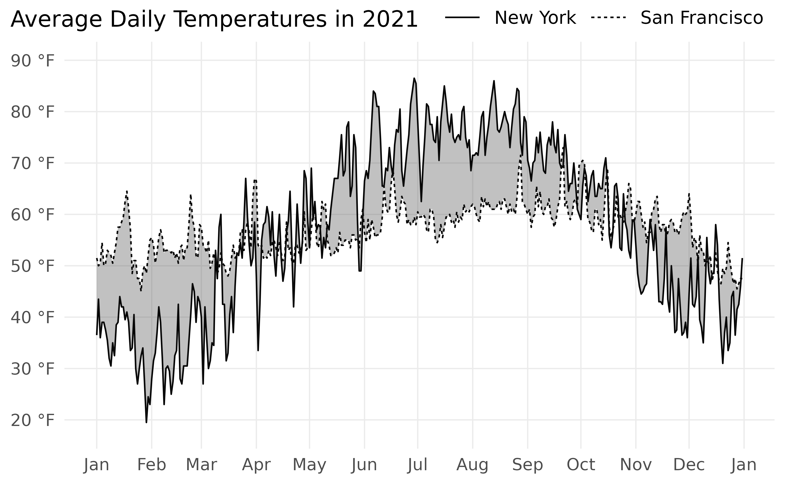
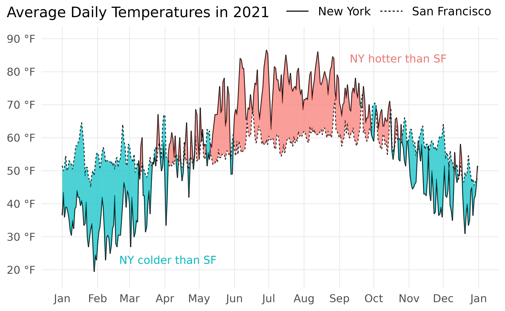

This article presents the “Unbraided Ribbon Problem” in which geom_ribbon() incorrectly fills the area between two alternating lines with two different colors. To fix the problem, we use geom_braid() from ggbraid with method = 'line'.
Let’s compare the temperatures of two cities in the United States: New York, New York and San Francisco, California.
Getting Started
ggbraid provides a data frame called temps, with daily average temperatures of New York and San Francisco in 2021 as recorded by the US National Weather Service (NWS) at weather.gov.1
library(ggplot2)
library(ggbraid)
library(dplyr)
library(tidyr)
data(temps)
temps
#> # A tibble: 730 × 3
#> city date avg
#> <chr> <date> <dbl>
#> 1 New York 2021-01-01 36.5
#> 2 New York 2021-01-02 43.5
#> 3 New York 2021-01-03 36
#> 4 New York 2021-01-04 39
#> 5 New York 2021-01-05 39
#> 6 New York 2021-01-06 37.5
#> 7 New York 2021-01-07 35.5
#> 8 New York 2021-01-08 32
#> 9 New York 2021-01-09 30.5
#> 10 New York 2021-01-10 35
#> # … with 720 more rowscity is New York or San Francisco, date is a calendar date in the YYYY-MM-DD format, and avg is the average temperature recorded in degrees Fahrenheit (°F) and rounded to the nearest half degree.2
What do the daily average temperatures look like?
We see much higher variability in temperatures in New York compared with San Francisco. This makes sense — New York is in the Northeastern US and experiences hot, humid summers and cold, occassionally snowy winters. San Francisco is on the West Coast and its Mediterranean climate means its temperature does not change much season to season.
Before we proceed further, let’s clean up the plot a bit and assign it to a variable p so we can reuse it throughout the article.
p <- ggplot() +
geom_line(aes(x = date, y = avg, linetype = city), data = temps) +
scale_x_date(date_breaks = "1 month", date_labels = "%b") +
scale_y_continuous(
breaks = seq(20, 90, by = 10),
labels = function(x, ...) format(paste(x, "°F"), ...),
limits = c(18, 90)
) +
guides(fill = "none") +
labs(
title = "Average Daily Temperatures in 2021",
linetype = NULL,
y = NULL,
x = NULL
) +
theme_minimal(base_size = 14) +
theme(
plot.title = element_text(size = 16),
plot.title.position = "plot",
legend.position = c(0.75, 1.06),
legend.direction = "horizontal",
legend.key.size = unit(2, "line"),
legend.text = element_text(size = 12),
panel.grid.major.x = element_line(size = 0.4),
panel.grid.major.y = element_line(size = 0.4),
panel.grid.minor.x = element_blank(),
panel.grid.minor.y = element_blank()
)
p
Much better.
Fun with Ribbons
Let’s fill the area between the two lines. We can do so with geom_ribbon() from ggplot2.
geom_ribbon() requires three aesthetics: x, ymin, and ymax. We can map date to x as we did in geom_line(). However, we’ll need to transform temps to create new variables that we can map to ymin and ymax.
We can pivot temps with pivot_wider() from the tidyr package, taking column names from city and values from avg. Call the new data frame temps_wide.
temps_wide <- temps %>%
pivot_wider(names_from = city, values_from = avg) %>%
rename(ny = `New York`, sf = `San Francisco`)
temps_wide
#> # A tibble: 365 × 3
#> date ny sf
#> <date> <dbl> <dbl>
#> 1 2021-01-01 36.5 51.5
#> 2 2021-01-02 43.5 50
#> 3 2021-01-03 36 50.5
#> 4 2021-01-04 39 54.5
#> 5 2021-01-05 39 50
#> 6 2021-01-06 37.5 50.5
#> 7 2021-01-07 35.5 53
#> 8 2021-01-08 32 52.5
#> 9 2021-01-09 30.5 52
#> 10 2021-01-10 35 50.5
#> # … with 355 more rowsNow we can add a new layer to p with geom_ribbon() using temps_wide. Map date to x, ny to ymin, and sf to ymax.3 Finally, add some transparency with alpha = 0.3.
p +
geom_ribbon(
aes(x = date, ymin = ny, ymax = sf),
data = temps_wide,
alpha = 0.3
)
Great! Using geom_ribbon() we’ve added a light grey ribbon that runs between the two lines.
On second thought… what if we used two colors for the ribbon? We could have one color when New York is hotter than San Francisco and another color when New York is colder than San Francisco.
This shouldn’t be hard to do. Map sf > ny to fill in geom_ribbon() and…
p +
geom_ribbon(
aes(x = date, ymin = ny, ymax = sf, fill = sf > ny),
data = temps_wide,
alpha = 0.7
)Chaos. What happened?
The Unbraided Ribbon Problem
Is this a bug in geom_ribbon()?
No, it’s not a bug. The problem is that we haven’t dealt with line intersections properly.
For example, consider rows 80-82 from temps_wide:
| date | ny | sf |
|---|---|---|
| 2021-03-21 | 52.5 | 52.0 |
| 2021-03-22 | 52.0 | 52.0 |
| 2021-03-23 | 54.5 | 56.5 |
After we have pass temps_wide to geom_ribbon() and map date to x, ny to ymin, sf to ymax, and sf > ny to fill, we get the following:
| x | ymin | ymax | fill |
|---|---|---|---|
| 18707 | 52.5 | 52.0 | FALSE |
| 18708 | 52.0 | 52.0 | FALSE |
| 18709 | 54.5 | 56.5 | TRUE |
(x is the integer representation of date, the number of days since January 1, 1970, the “Unix epoch”)
Ok, note the middle row. ymin and ymax are equal here, so this is a point where the two lines intersect. It turns out that geom_ribbon() requires two rows for every line intersection, one row where fill is FALSE and another row where fill is TRUE.
So we must insert a new row in the data, yielding the following:
| x | ymin | ymax | fill |
|---|---|---|---|
| 18707 | 52.5 | 52.0 | FALSE |
| 18708 | 52.0 | 52.0 | FALSE |
| 18708 | 52.0 | 52.0 | TRUE |
| 18709 | 54.5 | 56.5 | TRUE |
We call this process braiding.
We need to braid the ribbon where the lines intersect.
And the intersection described here is not the only type that requires braiding.
There are instances where the two lines intersect between two rows in the data. In these cases, we must use a mathematical formula to determine the exact point at which the lines intersect and braid the ribbon accordingly. There are also instances where both lines are vertical at the same x, an uncommon situation but one that produces an infinite number of intersection points and requires braiding to fix.
Braiding with ggbraid
The functions in ggbraid take care of all the braiding for you. Simply replace geom_ribbon() with geom_braid().
p +
geom_braid(
aes(x = date, ymin = ny, ymax = sf, fill = sf > ny),
data = temps_wide,
alpha = 0.7
)
#> `geom_braid()` using method = 'line'#> Warning in is.na(fill) && !is.na(braid): ‘length(x) = 3 > 1’ in coercion to #> ‘logical(1)’

There we go!
Notice the message from geom_braid() that it is using method = 'line'. Since we’ve drawn lines with geom_line() we must use method = 'line' to determine the point at which the lines intersect when the intersection occurs between two rows in the data. We can silence this message by explicity including method = 'line' within geom_braid().
geom_braid() isn’t a new geometry. It takes the data provided, performs the necessary braiding operations on it, and passes the result to geom_ribbon() for drawing. If we’d like, we can still use geom_ribbon() and set stat = 'braid'.
p +
geom_ribbon(
aes(x = date, ymin = ny, ymax = sf, fill = sf > ny),
data = temps_wide,
stat = "braid",
method = "line",
alpha = 0.7
)#> Warning in is.na(fill) && !is.na(braid): ‘length(x) = 3 > 1’ in coercion to #> ‘logical(1)’
This is the same plot as before. We’ve also silenced the message by including method = 'line'.
Finally, it may be helpful to label the ribbon colors so it’s clear what they represent. This can happen in a legend (which we’ve turned off with the guides(fill = "none") layer in p). Another possibility is to provide text annotations on the plot.
hues <- scales::hue_pal()(2) # ggplot2 default color palette
p +
geom_braid(
aes(x = date, ymin = ny, ymax = sf, fill = sf > ny),
data = temps_wide,
method = "line",
alpha = 0.7
) +
annotate("text", x = as.Date("2021-09-10"), y = 84, size = 4, label = "NY hotter than SF", hjust = 0, color = hues[1]) +
annotate("text", x = as.Date("2021-02-20"), y = 23, size = 4, label = "NY colder than SF", hjust = 0, color = hues[2])#> Warning in is.na(fill) && !is.na(braid): ‘length(x) = 3 > 1’ in coercion to #> ‘logical(1)’
